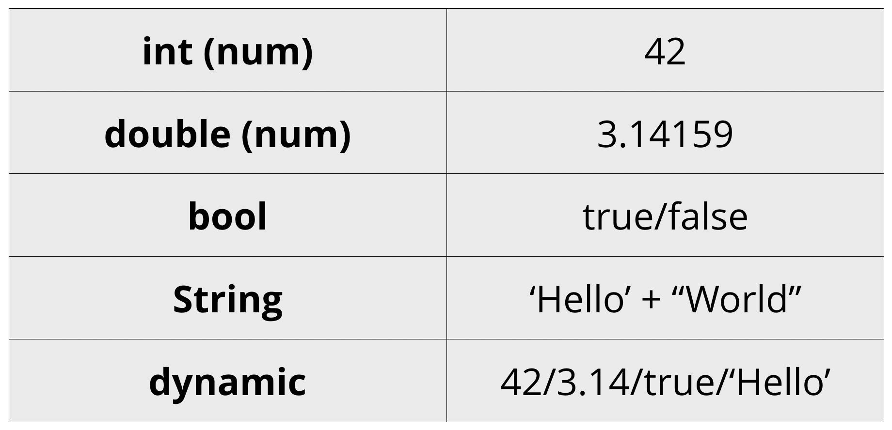
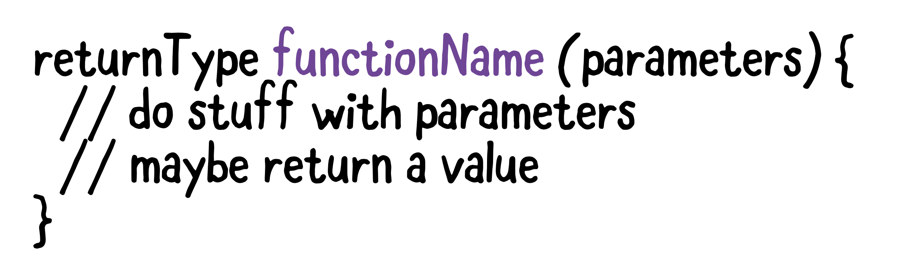

Dart was released by Google in 2011 and was initially designed as a replacement for JavaScript. Since then, the release of the Flutter SDK for iOS, Android, and web development has put a new spotlight on the Dart language. The most recent
version of Dart at the time of this recording is 2.4. Dart has many similarities to other languages you may already be familiar with, such as Java, C#, Swift, and Kotlin. Dart has the following language characteristics:
- statically typed
- Type inference
- String expressions
- Multi-paradigm including OOP and functional
- Supports lists, sets, and maps
- Can mimic dynamic types using dynamic
Dart programs begin with a call to the `main` function, and the syntax for `main` looks very similar to the syntax for `main` in other languages like C, Swift, or Kotlin. The main function is preceded by a return type, which in Dart is void, meaning nothing is returned. The parentheses after main indicate that this is a function definition, and the curly braces contain the body of the function. Inside main, you add the Dart code for your program.
The Dart programming language is a general purpose programming language developed by Google. It is widely used at Google and the programming language Flutter development.
void main() {
}The first thing we’ll add to main is a variable assignment statement. Variables hold the data that your program will work on. You can think of a variable like a box in your computer’s memory that holds a value. Each box has a name, the name for the variable. You use the var keyword in Dart to denote a variable.
Comments in Dart look just like those in C in other languages: text either following // on a line, or text within /* … */ blocks.
Similar to many languages such as C, Java, Swift, and Kotlin, Dart is statically typed. That means that each variable in Dart has a type that must be known when the code is compiled, and the type of the variable cannot change when the program is run. This contrasts with languages like Python and Javascript that are dynamically typed, meaning variables can hold different kinds of data when being run, and the type does not need to be known when the code is compiled.
Dart uses int for integers, double for floating points, and bool for booleans. ints and doubles are both derived from a type named num. You use the String type to represent sequences of characters. Dart also has a keyword dynamic which lets you mimic dynamic typing in the statically typed Dart.
Dart has all the usual operators you’re familiar with from other languages like C, Swift, and Kotlin. There are arithmetic operators, equality, increment and decrement, comparison, and logical operators. Dart also allows for operator overloading like C++ and Kotlin, but that’s beyond the scope of this tutorial.
The Dart string type is String. Strings are expressed in Dart using text surrounded by either single or double quotes. Like for the other types we've seen, you can use either var and type inference or String to create a string variable. Similar to languages like Kotlin and Swift, you can embed values and expressions inside strings to create new strings, using the dollar sign symbol $. You can combine adjacent strings, for example, long strings that go multiple lines, simply by placing the strings next to one another or on separate lines. You can also combine strings using the + operator. You can use triple quotes to have a string run multiple lines and preserve formatting.
If you need to have escape sequences shown within the string, you can use raw strings, which are prefixed by r.
var rawString = r"If you can't explain it simply\nyou don't understand it well enough.";
print(rawString);
// If you can't explain it simply\nyou don't understand it well enough.Control flow lets you dictate that certain lines of code are executed, skipped over, or repeated. Control flow is handled in Dart with conditionals and loops.
Conditionals
The most basic form of control flow is deciding whether to execute or skip over certain parts of your code, depending on conditions that occur as your program runs. The language construct for handling conditions is the if/else statement. if/else in Dart looks nearly identical to the use in other C-like languages.
While Loops
Loops let you repeat code a certain number of times or based on certain conditions. The latter are handled by while loops. There are two forms of while loop in Dart, while and do-while. The difference is that for while, the loop condition is before the code block, and in do-while the condition is after. So for do-while, the code block is guaranteed to run at least one time.
if (animal == 'cat' || animal == 'dog') {
print('Animal is a house pet.');
} else if (animal == 'rhino') {
print('That\'s a big animal.');
} else {
print('Animal is NOT a house pet.');
}
// Animal is NOT a house pet.
Continue and Break
Dart has the usual continue and break keywords for use in loops and elsewhere. continue will skip remaining code inside a loop and immediately go to the next iteration. break stops the loop and continues execution after the body of the loop. You must be careful when using continue in your code. For example, if you take the do-while loop from above, and say you want to continue when i is equal to 5, that could result in an infinite loop that just keeps running, depending in where you place the continue statement:
For Loops
The loops that loop a pre-determined number of times are for loops in Dart, which once again are very similar to those from other languages. Dart has both a C-like form of a for loop, with an initialization, loop condition, and an action, as well a for-in loop for iterating over a collection of objects. In the first form, the initialization runs before the first loop iteration. The condition is checked on entering each iteration, and the action is run before starting the next iteration. For the for-in form, a variable is set to each element in a collection of Dart objects for each subsequent iteration of the loop. Let's say you want to sum up the values of the first 10 integers.
Switch and Enum
switch and enum Dart also has support for a switch statement and enumerations using enum. Consult the Dart documentation for more on both. Like most of the rest of the Dart constructs you've seen, they work similarly to how they work in other languages like C and Java.
ist, Set, Map and Queue are the collection classes implemented in Dart. In the following Dart Tutorials, we walk you through these Collection classes and different properties and operations that could be performed on them. In Dart, List is a collection of elements that can belong to different types. Also, elements in list are indexed. We can perform different operations of List with the help of built-in properties and methods of List class or primitive conditional and Looping statements.
A very commonly used collection in programming is an array. Dart represents arrays in the form of List objects. A List is simply an ordered group of objects. The dart:core library provides the List class that enables creation and manipulation of lists.
Dart Lists
A list is referenced by a variable name. The items in the list can be accessed using index. Index starts with 0. Arrays is a common concept in most of the programming languages. In Dart, there is no specific class for Arrays. Dart Lists serve the purpose of Array concept. In Dart programming language, there are two types of lists based on eligibility of list to change in length:
- Fixed Length Lists
- Growable Lists
In Dart, Fixed Length Lists are the lists which are defined with specific length.
There are two ways in which you can define a Growable List in Dart. They are:
- Assign a List of items directly to a variable.
- Create an empty list with no arguments passed to List() in new List()
Dart Maps
The Map object is a simple key/value pair. Keys and values in a map may be of any type. A Map is a dynamic collection. In other words, Maps can grow and shrink at runtime. Maps can be declared in two ways −
- Using Map Literals
- Using a Map constructor
To declare a map using map literals, you need to enclose the key-value pairs within a pair of curly brackets "{ }".
To declare a Map using a Map constructor, we have two steps. First, declare the map and second, initialize the map.
Functions let you package multiple related lines of code into a single body that you can summon to avoid repeating those lines of code throughout your Dart application.
A function consists of a return type, a function name, a parameter list in parentheses, and then a function body enclosed in braces. The code you're turning into the function goes inside the braces. When you call the function, you pass in arguments that match the types of the parameters of the function.
Typically, functions are defined either outside other functions or inside Dart classes, but you can also nest Dart functions in one another. For example, you can add the functions in this section inside main. Functions can be classified into First-Class, Anonymous, Arrow Functions etc.
When a Dart function, either named or anonymous, consists of just one line of code, you can reduce the function body using the Dart arrow syntax.
For example, multiply above becomes:
var multiply = (int a, int b) => a * b;You've removed the braces and the return statement.
You can also use arrow syntax with applyMultiplier:
Function applyMultiplier(num multiplier) =>
(num value) => value * multiplier;You've used arrow syntax twice here: the first is denoting the return value for the applyMultiplier function, the second is within the return value itself, which is an anonymous function.
Check out the official Dart documentation to learn about intermediate and advanced parts of Dart:
- Iterables and Generators
- Exceptions
- Runes and symbols
- Asynchronous Dart with isolates, streams, futures and async/await